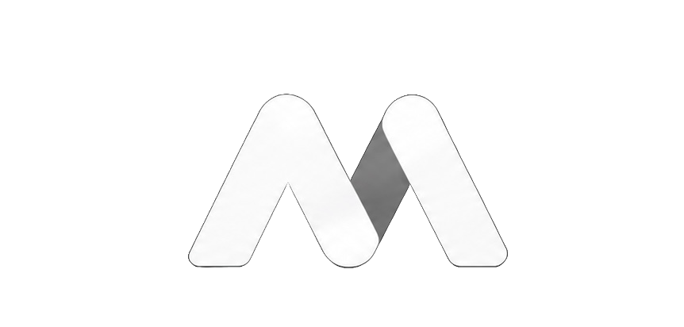
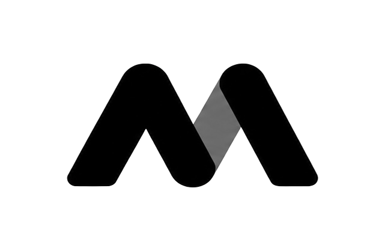

01_KONSEPT / FİKİR
Milenio Software'in tüm projeleri önce dijital kara tahtada başlar. Karmaşık problemleri basite indirgemek için mimariyi koddan önce zihinde kuruyoruz.
[ aşama: planlama ]

MilenioSoftwareGeleceğin Sistemleri
İşin karmaşıklığını azaltan, düşünülerek tasarlanmış dijital araçlar. Küçük bir stüdyo. Uzun ömürlü sistemlere odaklı.
↓Milenio Software'in tüm projeleri önce dijital kara tahtada başlar. Karmaşık problemleri basite indirgemek için mimariyi koddan önce zihinde kuruyoruz.
[ aşama: planlama ]Hazır şablonlar veya şişirilmiş kütüphaneler kullanmıyoruz. Geliştirmekte olduğumuz her deneysel arayüzü, en yüksek hız için saf CSS ve JavaScript ile sıfırdan kuruyoruz.
[ ortam: yerel_sunucu ]Bir girişimin en güçlü aracı hızdır. Fikirleri hızla çalışan örnek sürümlere dönüştürüyor, hatalardan öğreniyor ve kodu her gün daha iyi hale getiriyoruz.
[ sürüm: test_aşamasında ]Her geliştirme, net bir probleme ve özenli bir uygulamaya dayanmalı. Bağımsız bir yazılım stüdyosu olarak fikirleri araştırıyor, geliştirme sürecini açıkça paylaşıyoruz.
Bir fikriniz, sorunuz ya da çözmek istediğiniz bir problem mi var? Mesaj bırakın, konuşmayı başlatalım.
[ İLETİŞİM: AŞAĞIDAKİ FORM ] ↓[ İLETİŞİM: SAĞDAKİ FORM ] →